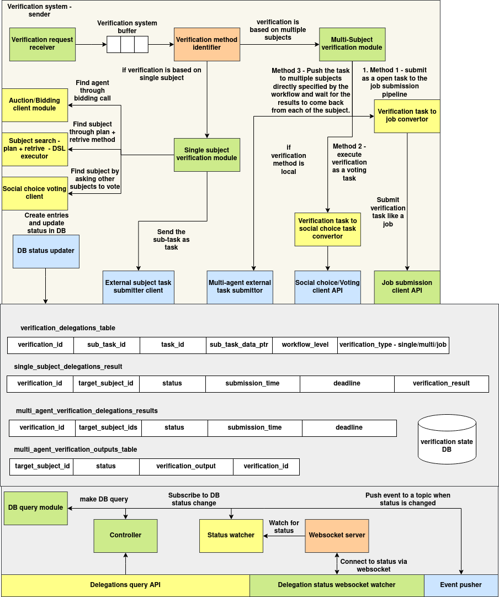

Verification System
Introduction
The Verification System manages task delegation and result verification workflows for subjects (agents). It supports creating and managing verification assignments, storing results in MongoDB, and broadcasting live updates via WebSocket.
This system includes:
- Schema definitions using Python dataclasses
- database client with full CRUD support
- Flask REST API for external interaction
- WebSocket server for real-time updates to connected clients
Architecture


The Verification System follows a modular and event-driven architecture that enables asynchronous, multi-agent task delegation and verification with real-time status updates. It is composed of three core layers: Verification Processing Pipeline, Delegation State Management, and Status Broadcast System.
1. Verification Processing Pipeline
The pipeline begins with the Verification Request Receiver, which places new requests into a Verification Buffer. Each request is evaluated by the Verification Method Identifier to determine whether the task requires a single subject or multiple agents.
-
For single-subject verifications, the system uses DSL-based planning or auction modules to locate a suitable agent. The selected agent is issued a task through the Single Subject Verification Module, which hands it off to the External Subject Task Submitter Client.
-
For multi-agent verifications, the request flows into the Multi-Subject Verification Module, which offers three execution strategies:
-
Job-based submission, via the Verification Task to Job Converter
- Voting-based decision, using the Social Choice Task Converter and the Voting Client API
- Workflow-specific delegation, where the module pushes the task to all specified agents and awaits results
All task creation and status updates are handled centrally by the DB Status Updater component.
2. Delegation State Management
All verification metadata is persisted in the Verification State Database, which includes:
verification_delegations_table: primary metadata for verification requestssingle_subject_delegations_resultandmulti_agent_verification_delegations_results: individual and collective outcomesmulti_agent_verification_outputs_table: detailed verification outputs for each agent
These tables are indexed and accessed via the DB Query Module, allowing internal and external clients to inspect and monitor task states.
3. Status Broadcast System
To enable real-time tracking, the Status Watcher subscribes to DB-level status changes and emits events when state updates occur. These are transmitted over the WebSocket Server, allowing clients to subscribe to status channels for specific tasks or sub-tasks.
The Controller mediates database queries, while the Event Pusher publishes updates to appropriate listeners. This ensures synchronization between backend processing and front-end interfaces.
Schema
DelegationResult
@dataclass
class DelegationResult:
target_subject_id: str
status: str
submission_time: Optional[datetime] = None
deadline: Optional[datetime] = None
verification_result: dict = field(default_factory=dict)
verification_output: dict = field(default_factory=dict)
| Field | Type | Description |
|---|---|---|
target_subject_id |
str |
ID of the delegated subject |
status |
str |
Task status (e.g. pending, completed) |
submission_time |
datetime |
When result was submitted |
deadline |
datetime |
Deadline for task completion |
verification_result |
dict |
Structured output from subject's verification |
verification_output |
dict |
Additional output data |
VerificationDelegation
@dataclass
class VerificationDelegation:
task_id: str
subject_id: str
sub_task_id: Optional[str] = None
sub_task_data_ptr: Optional[str] = None
workflow_level: Optional[str] = None
verification_type: Optional[str] = None
single_subject_results: List[DelegationResult] = field(default_factory=list)
multi_agent_results: List[DelegationResult] = field(default_factory=list)
created_at: datetime = field(default_factory=datetime.utcnow)
updated_at: Optional[datetime] = None
| Field | Type | Description |
|---|---|---|
task_id |
str |
Unique task identifier |
subject_id |
str |
Subject responsible for initiating the task |
sub_task_id |
str |
Optional sub-task ID |
sub_task_data_ptr |
str |
Pointer to data source |
workflow_level |
str |
Workflow level of delegation |
verification_type |
str |
Type of verification (manual, auto, etc.) |
single_subject_results |
List[Result] |
Results from individual subjects |
multi_agent_results |
List[Result] |
Results from multi-agent collaboration |
created_at |
datetime |
Timestamp of task creation |
updated_at |
datetime |
Timestamp of last update |
APIs
POST /verifications
Create a new verification task.
Request:
{
"task_id": "task123",
"subject_id": "user_abc",
"verification_type": "manual",
"single_subject_results": [
{
"target_subject_id": "agent_1",
"status": "pending"
}
]
}
cURL:
curl -X POST http://localhost:5000/verifications \
-H "Content-Type: application/json" \
-d '{
"task_id": "task123",
"subject_id": "user_abc",
"verification_type": "manual",
"single_subject_results": [
{
"target_subject_id": "agent_1",
"status": "pending"
}
]
}'
GET /verifications/<verification_id>
Retrieve a verification task by ID.
cURL:
curl http://localhost:5000/verifications/665f46fa2eced7ed85dff231
PUT /verifications/<verification_id>
Update an existing verification.
Request:
{
"verification_type": "auto",
"updated_at": "2025-06-04T11:00:00"
}
cURL:
curl -X PUT http://localhost:5000/verifications/665f46fa2eced7ed85dff231 \
-H "Content-Type: application/json" \
-d '{
"verification_type": "auto",
"updated_at": "2025-06-04T11:00:00"
}'
DELETE /verifications/<verification_id>
Delete a verification task by ID.
cURL:
curl -X DELETE http://localhost:5000/verifications/665f46fa2eced7ed85dff231
GET /verifications/task/<task_id>
Query verifications by task ID.
cURL:
curl http://localhost:5000/verifications/task/task123
POST /verifications/<verification_id>/submit-result
Submit a result for a delegated subject.
Request:
{
"target_subject_id": "agent_1",
"status": "completed",
"result_data": {
"verification_result": {
"pass": true
},
"verification_output": {
"notes": "All checks passed."
}
}
}
cURL:
curl -X POST http://localhost:5000/verifications/665f46fa2eced7ed85dff231/submit-result \
-H "Content-Type: application/json" \
-d '{
"target_subject_id": "agent_1",
"status": "completed",
"result_data": {
"verification_result": {
"pass": true
},
"verification_output": {
"notes": "All checks passed."
}
}
}'
WebSocket Server + Python Client Example
Server Endpoint
The WebSocket server listens on:
ws://localhost:8765/ws/<subject_id>/<task_id>[/<sub_task_id>]
Whenever a verification is created or updated, connected clients receive a JSON message with the latest verification document.
Sample Python WebSocket Client
import asyncio
import websockets
async def listen_updates():
uri = "ws://localhost:8765/ws/user_abc/task123"
async with websockets.connect(uri) as websocket:
print("Listening for updates...")
while True:
message = await websocket.recv()
print(f"Received update: {message}")
asyncio.run(listen_updates())
To receive updates for a specific sub-task:
uri = "ws://localhost:8765/ws/user_abc/task123/subtask1"
Verification Client
Introduction
The Verification Client module provides high-level tools to interact with the verification and voting system using REST and NATS. It enables:
- Creating and submitting verification tasks
- Pushing and receiving real-time responses via NATS
- Managing social choice tasks and votes using REST APIs
- Performing asynchronous coordination using event-based protocols
This module abstracts underlying communication and simplifies integration into distributed agent systems.
Importing Guide
To use the verification client, import it as:
from agent_sdk.verification import *
This gives access to:
VerificationClient: Wrapper around REST APIs and WebSocket listenersTaskDBResponseWaiter: Listens to WebSocket-based result updatesAdhocVerification: Pushes verification events over NATSAdhocVerificationReceiver: Listens for ad-hoc verification messages via NATSAdhocVerificationResponsePusher: Sends verification responses over NATSSocialTaskService: Manages social tasks and voting flows
Submitting Task for Verification
You can submit a new verification task using VerificationClient:
from agent_sdk.verification import VerificationClient
client = VerificationClient("http://localhost:5000")
response = client.create_verification(
task_id="task_123",
subject_id="agent_a",
sub_task_id="subtask_xyz",
verification_type="manual"
)
print("Verification ID:", response)
You can also push an ad-hoc verification message directly over NATS:
from agent_sdk.verification import AdhocVerification
verifier = AdhocVerification("nats://localhost:4222")
verifier.push(
subject="agent_a__task_123",
event_type="start_verification",
sender_subject_id="agent_b",
event_data={"input": "data"}
)
verifier.close()
Waiting for Verification Result
Via WebSocket (TaskDBResponseWaiter)
Use this to stream updates from the backend via a WebSocket server:
from agent_sdk.verification import VerificationClient
waiter = VerificationClient("http://localhost:5000").create_waiter("task_123", "subtask_xyz")
for update in waiter.get_results():
print("Received update:", update)
break
Via NATS (AdhocVerificationReceiver)
You can receive ad-hoc verification responses like this:
from agent_sdk.verification import AdhocVerificationReceiver
receiver = AdhocVerificationReceiver("nats://localhost:4222")
response = receiver.receive(subject_id="agent_a", verification_id="task_123")
print("Received:", response)
receiver.close()
To push a response:
from agent_sdk.verification import AdhocVerificationResponsePusher
responder = AdhocVerificationResponsePusher("nats://localhost:4222")
responder.push(
subject_id="agent_a",
verification_id="task_123",
response_data={"verified": True}
)
responder.close()
Social Choice and Voting Client
To manage social tasks and voting flows, use the SocialTaskService:
from agent_sdk.verification import SocialTaskService
service = SocialTaskService("http://localhost:5001")
# Create a new social task
task = service.create_social_task(
created_by_subject_id="agent_a",
voting_type="majority",
invited_subject_ids=["agent_b", "agent_c"],
goal_data={"decision": "select_strategy"},
status="pending",
report={},
voting_pqt_dsl_id="dsl_123",
choice_evaluation_dsl="eval_dsl",
deadline_time=1688888888
)
print("Created Social Task:", task.social_task_id)
# Wait for voting result (via NATS)
waiter = service.create_waiter_for_task(task_id=task.social_task_id)
result = waiter.get()
print("Voting Result:", result.voting_result)